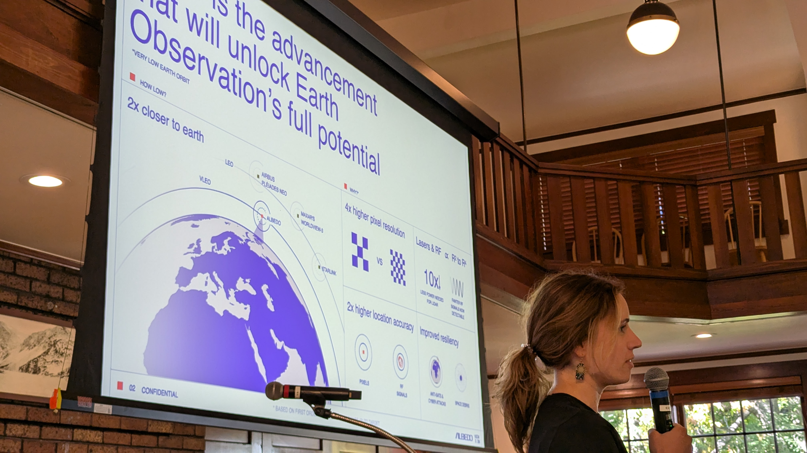
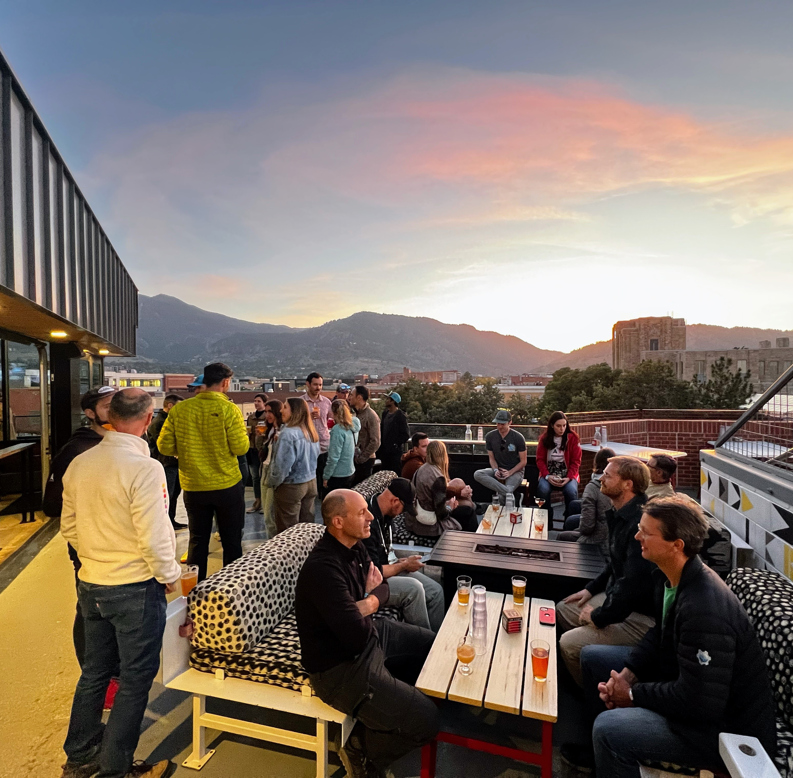
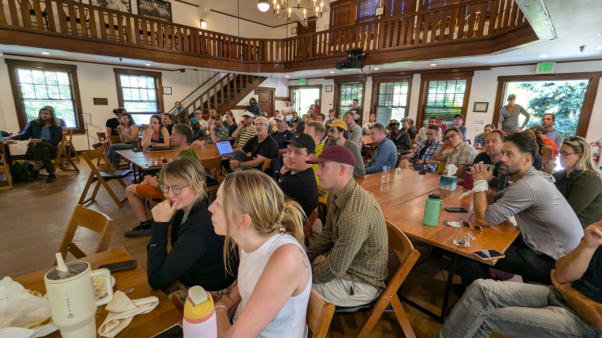
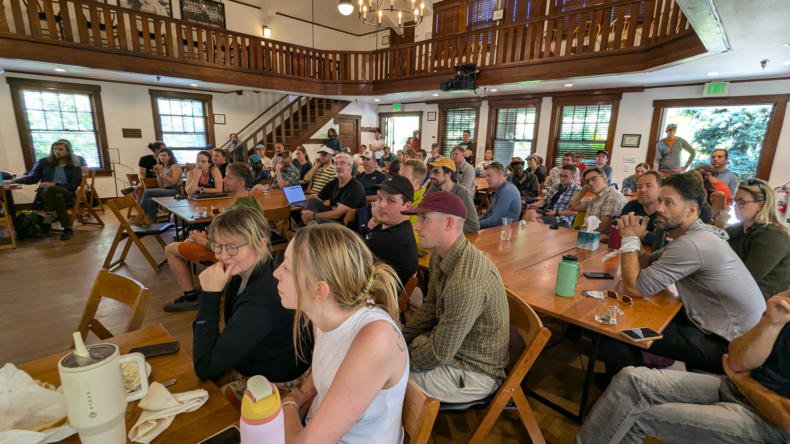

SatCamp Retrospective#
This week I attended SatCamp, a small unconference focused on the Satellite / Earth Observation / Remote sensing industry held in Boulder Colorado.

SatCamp was a wonderful collection of imagery nerds talking about technology, public good, cloud performance, and business models, all while hiking/biking/trail running in the Boulder foothills. (This is the most fit collection of humans I’ve met at a business conference).
I was a bit of an outsider at this conference, so I thought I’d write up an outsider perspective in hopes of giving other people like me a sense for this industry and community.
Disclaimer: *I am not an expert and don’t know this space well. The thoughts below are only a first impression.”
Big Opportunity / Immature Market#
Potential#
Satellite imagery’s potential value is incredible. We have these technological marvels watching the earth and observing change day to day. Satellites can help us answer questions like …
How is this field of potatoes doing on my farm?
Which of these houses would gain the most from solar panels?
Is this road clear of water so that disaster relief can finally reach this flooded region?
Can we send insurance payments immediately after a disaster instead of waiting months for an assessor to arrive?
… and of course … How many people are at this military training camp?
Struggle#
However despite the huge potential, companies in this space seem to be struggling. Giants like Maxar were recently taken private by private equity at a distressed valuation of $6bn (for context Shell’s annual revenue is $300bn / year, a rate of roughly one Maxar valuation per week). High profile tech companies like Planet Labs make about $200m per year, and recently underwent personnel contraction. Those are the success stories who were present. Not present included ESRI, which people here refer to with the same gravity as Lord Voldemort. They’re a bit more valuable and profitable than Maxar, but not much.
There are hundreds of small climate tech companies who do things like track carbon credits or help companies understand climate risk, all of whom seem to struggle and many of whom are expected to close up shop in the next couple years.
From Pixels to Business Value#
My sense is that it’s not clear how to convert pixels in a satellite image to business value. There are many possible applications, but relatively few obvious scalable ones. Any institution wanting to get business value has to go all the way from raw satellite imagery to business value on their own, and that’s hard.
In most industries there’s a collection of companies ranging from the broad and horizontal infrastructure products (think DataBricks), to the more vertically specific products (think the thousands of MLOps companies), and finally to the last-mile consultants, all of whom convert data into insight and value by working together. Satellite imagery / remote sensing / earth observation doesn’t have that ecosystem yet. We have consultants who read data directly from AWS without any real tooling support.
It’s actually kinda bonkers how much data is available today for how immature this market is.
There are some horizontal product companies, but they seem to struggle to demonstrate real value on their own. Product revenue seems small in this vertical.
Consulting Companies do OK#
There are a few consulting agencies in this space (Development Seed and SparkGeo were well represented at the conference, along with a few independent consultants), and they all seemed to do fine. They have to be technically capable, ranging experience from cloud infrastructure, to data science, to understanding verticals like insurance or agriculture. These groups seemed to be the most collected and respected at the event.
The consultants seemed to have “figured it out” while everyone else was struggling.
Exception: Government and Defense#
The one exception to “No one knows how to make money here” seems to be those companies targeting Defense and civilian government (like NASA). The larger enterprises (Maxar, Planet) mostly target defense today. The US-based consultancies (DevSeed/Element84) largely target civilian government.
The US Government seems to highly value observing the earth and its people.
Future?#
My sense is that there is significant value here, but that it’ll take a while for an symbiotic ecosystem of product and consulting companies to grow up and learn to better deliver business value.
This feels like the Internet before web search or Oil before the automobile. Amazing potential, but it’s not clear what to actually do with it today.
There’s a ton of potential here. I don’t know if there’s a first mover advantage, or if several companies need to try-and-die here, fertilizing the soil before someone can finally thrive.
Tight Community#
This community feels the way Scientific Python felt before we got popular. Everyone is super passionate. Everyone knows each other. Everyone is really kind and supportive. Everyone wants to change the world. It was a great vibe.
Mostly it made me miss the days before Python was flooded with money and success (not that I’m complaining about the money and success).
There was some impractical idealism, but there were also strong and respected voices speaking out for practicality. It was refreshing hearing people speak so much about business models and what they as a community could do to change things, rather than only wishful thinking about how larger third parties should act.
Small Conference Format was Great#
This event had a great form factor.
It was capped at 100 people, had only lightning talks and panels, and had a lot of unstructured and outdoor time. It was also a pretty specific community. Ticket prices were modest and my sense is that it wasn’t as hard as a proper conference to pull off (not to diminish the effort of the organizers, who were great).
I think the world could probably use more low-stakes and hyper-specific workshops to complement the broad and large events that dominate most work travel today. We ran a Dask developers invite-only workshop a few years ago with about 50 people and it felt a little like that. Great energy.
Technology Needs#
From my perspective as someone who cares about Python+Parallelism+Cloud, mostly this community just needs embarrassingly parallel cloud computing with relatively simple processing. Even the sophistication of distributed Xarray often feels like overkill here. I mostly heard people talk about AWS tools like Lambda and Batch, and workflow managers like Prefect and Flyte.
They’re definitely inefficient. When asked my favorite question “How much do you think it costs to process 1TB of cloud data” answers ranged in the $20-50 range (real answer is $0.10) which matches my experience with other semi-technical groups.
While many people have access to large scale cloud computing, they mostly have over-engineered systems around Kubernetes or cobbled together AWS architectures, typically that reduce to just AWS Batch-or-Lambda.
When showed Coiled demos people were generally blown away, mostly by ease of use, simplicity of architecture, and cost efficiency. The sophisticated task graph stuff or ML libraries didn’t matter much.
Final Thoughts#
I had a good time (people were great) and learned a lot (people should attend events adjacent to their space more often). I’m oddly both more and less enthusiastic about engaging this community than I was before.
Photos#
Thanks to the folks who took these.
 {kind=link}
{kind=link}
 

{kind=link}